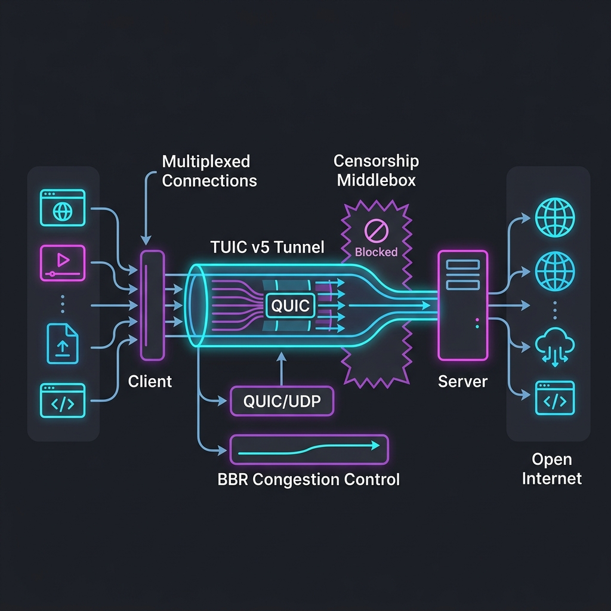

在当今网络干扰日益严峻的背景下，基于 UDP 的传输协议已逐步成为网络加速（科学上网）的重要前沿。在上一代协议（如 Shadowsocks、VLESS）面临 DPI（深度包检测）精准识别的威胁时，基于 QUIC（Quick UDP Internet Connections） 的新一代代理协议应运而生。这其中，Hysteria 2 和 TUIC v5 是最受极客与机场主追捧的杰出代表。
许多用户在选择客户端配置时，常常纠结于这两者。有人说“Hysteria 2 速度最快，看视频爽”，但也有人反馈“使用 Hys2 不到半小时节点就断流超时，而换成 TUIC 却一整天稳定不掉线”。作为底层的网络协议，TUIC v5 是如何工作的？它与 Hysteria 2 在设计哲学上有什么本质不同？本篇文章将带您深入 TUIC v5 的技术底层，解析其核心优势。
一、 什么是 TUIC v5 协议？
TUIC（全称为 TUIC Tunnel）是一个完全定制的、基于标准 QUIC 传输层协议的专用科学上网代理通道。
相比于传统的 Trojan 或 Shadowsocks 等运行在 TCP 上的协议，TUIC 运行在 UDP 协议之上。它的诞生初衷是解决在高丢包率、恶劣跨国网络链路上，传统 TCP 代理协议速度断崖式下跌的问题。演进到 TUIC v5 以后，该协议在安全性、首包建连时延、以及多路复用吞吐率上面进行了重构，使其成为了一款具备商用高并发水准的极速协议。

二、 QUIC 底层带来的三大革命
要理解 TUIC v5 为什么优秀，首先需要理解它所依赖的 QUIC 协议。QUIC 是由 Google 提出并最终成为 RFC 9000 国际标准的传输协议。它在 UDP 之上实现了一个可靠的、安全的、多路复用的传输层。这为科学上网带来了革命性的提升：
1. 0-RTT 极速建连（握手消灭延迟）
在传统的 HTTPS 代理中，连接建立需要经历：TCP 三次握手（1.5 RTT） + TLS 密钥交换握手（1-2 RTT） + 代理协议握手，在数据真正开始传输前，用户端 and 境外服务器之间已经往返了数次。如果物理延迟是 150ms，那么首屏加载可能需要等待 600ms 以上。
而 QUIC 协议将传输握手和加密握手合二为一。TUIC v5 充分利用了这一点，在首次连接后，后续再次建连支持 0-RTT 发送数据。客户端可以在发出第一个包的同时，直接附带加密数据请求。这使得打开网页时的首屏响应极其灵敏，几乎感觉不到代理的存在。
2. 彻底解决 TCP 队头阻塞（Head-of-Line Blocking）
传统的 Clash 代理中，如果你在浏览器里开了十个网页，所有的流量可能都会复用同一个 TCP 加密连接。一旦其中一个网页的某个数据包在公网上丢了，TCP 协议为了保证顺序，会拦截后续所有网页的数据包，直到那个丢失的包被重传成功。这就是 TCP 队头阻塞。
QUIC 在一个 UDP 通道中运行多个独立的逻辑“流（Streams）”。即使某个网页的数据发生丢包，也仅仅影响该网页自身，其他网页的数据包照样传输，这在丢包率达到 10% 甚至 20% 的晚高峰环境下，能显著提升整体访问流畅度。
3. 完美的连接迁移（Connection Migration）
当我们拿着手机从客厅的 Wi-Fi 走到门口，切换到 5G 蜂窝网络时，手机的本地 IP 地址会瞬间发生改变。对于 Shadowsocks 等传统 TCP 连接，这意味着原有的连接全部断开，所有下载、视频缓存任务必须中断并重新建立握手。
而 TUIC 基于 QUIC，它不使用“源IP + 源端口 + 目的IP + 目的端口”四元组来识别连接，而是使用一个随机生成的 连接ID（Connection ID）。只要连接 ID 不变，即使手机的 IP 从 Wi-Fi 变成了 5G，正在传输的数据包也能无缝衔接，网络绝不断流，这是移动端科学上网的终极体验。
三、 TUIC v5 与 Hysteria 2 对比
同为当前大火的 QUIC 协议，TUIC v5 和 Hysteria 2 到底有什么区别？我们可以通过以下维度进行深度解密：
1. 拥塞控制哲学：标准 BBR vs 暴力发包
Hysteria 2 的核心卖点是其定制的“暴力发包”拥塞控制。它的哲学是：不管网络丢包多少，我都按照设定的上传/下载速率拼命向外发送 UDP 数据包，通过冗余发包硬生生抢占公网带宽。这种做法在网络差的单条链路上效果拔群，甚至可以让 100M 的烂线路跑满。
但这种“强盗行径”会导致极其严重的副作用：公网上其他网民的流量会被你严重挤压。更致命的是，国内运营商（如电信、联通）部署了智能 QoS 系统，一旦检测到某 IP 存在持续的大流量、非标准的暴增 UDP 发包行为，就会立即对其进行 UDP 限速（QoS），直接让你的线路速度掉到几百 KB 甚至直接封锁目标端口。这也是为什么很多人用 Hys2 经常遭遇“刚连上几百兆，半小时后直接超时不可用”的原因。
而 TUIC v5 遵循 QUIC 的标准拥塞控制协议（支持 BBRv1/BBRv2 或者是 Cubic 拥塞算法）。它的哲学是：在不破坏公网带宽公平性的前提下，利用 QUIC 协议的多路复用、低延迟握手和高效纠错来提升速度。运营商的 QoS 系统对这种“温和友好”的 BBR 流量通常予以放行，因此 TUIC 的连接稳定性往往远超 Hysteria 2，非常适合需要长期挂代理、打跨境游戏、做外贸直播的用户。
2. 多路复用与抗抖动
TUIC v5 采用了最新的多路复用机制，专门针对大量并发请求（如网页中同时加载几十个小图片、API 请求）进行了优化。即使晚高峰物理丢包率飙升，其内置 of 退避重传机制也极其轻量化，不容易像 Hys2 那样因为强力重发导致本地设备 CPU 跑满或路由器内存耗尽。
四、 代理客户端配置示例
目前，主流代理软件如 Clash Verge Rev、Sing-box、Shadowrocket 均已原生支持 TUIC v5 协议。以下是两款最常用工具的配置说明：
1. Clash Verge Rev 配置 (YAML 格式)
在 Clash 的配置文件 proxies 列表中，您可以直接加入以下 TUIC v5 节点信息：
proxies:
- name: "香港极速专线 - TUIC v5"
type: tuic
server: hk-tuic.nodehub168.com
port: 443
uuid: your-uuid-here-xxxx-xxxx
password: your-secure-password
alpn: [h3]
disable-sni: false
reduce-rtt: true
udp-relay-mode: native
skip-cert-verify: false关键参数说明：
alpn: 必须设置为[h3]，代表应用层协议协商为 HTTP/3（QUIC）。reduce-rtt: 开启此项将启动 0-RTT 极速握手，缩短连接等待时间。udp-relay-mode: 可选native或quic。推荐使用native，以获得最佳的 UDP 转发兼容性。
2. Sing-box 客户端配置 (JSON 格式)
如果您使用的是纯净核心的 Sing-box 客户端，可在 outbounds 部分按如下格式配置：
{
"type": "tuic",
"tag": "tuic-out",
"server": "hk-tuic.nodehub168.com",
"server_port": 443,
"uuid": "your-uuid-here-xxxx-xxxx",
"password": "your-secure-password",
"tls": {
"enabled": true,
"server_name": "hk-tuic.nodehub168.com",
"alpn": ["h3"],
"insecure": false
},
"raw_control_header": false,
"congestion_control": "bbr",
"udp_relay_mode": "native"
}五、 TUIC v5 最佳适用场景总结
了解了底层的技术优势，我们就可以有针对性地对 TUIC v5 协议的使用场景做出以下定位：
- 外贸、客服、日常网页办公： 需要长时间保持连接，追求首屏响应速度，拒绝任何无预警的频繁重连。
- 跨国联机游戏加速： TUIC 的 UDP 传输架构非常利于游戏握手，且由于其连接迁移特性，即使网络遇到微弱抖动也不会导致游戏断线重连。
- 封锁严峻的区域： 当你所在地区的宽带网络对常规 TCP 代理（Shadowsocks/Trojan）实施了重点阻断，且对 Hysteria 的暴力 UDP 采取限速时，TUIC v5 往往能成为最稳健的突破口。
如果你想体验最新、最稳定的 QUIC 通信技术，建议在选择您的服务商时，确认其是否配备了高质量的 TUIC v5 专属节点。配合合理的客户端参数，这能让你的科学上网体验提升一个档次。